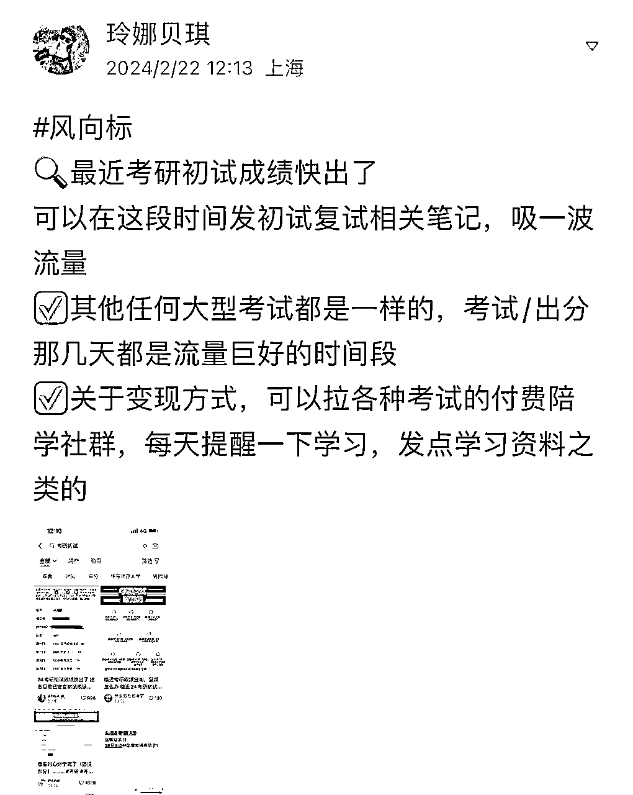
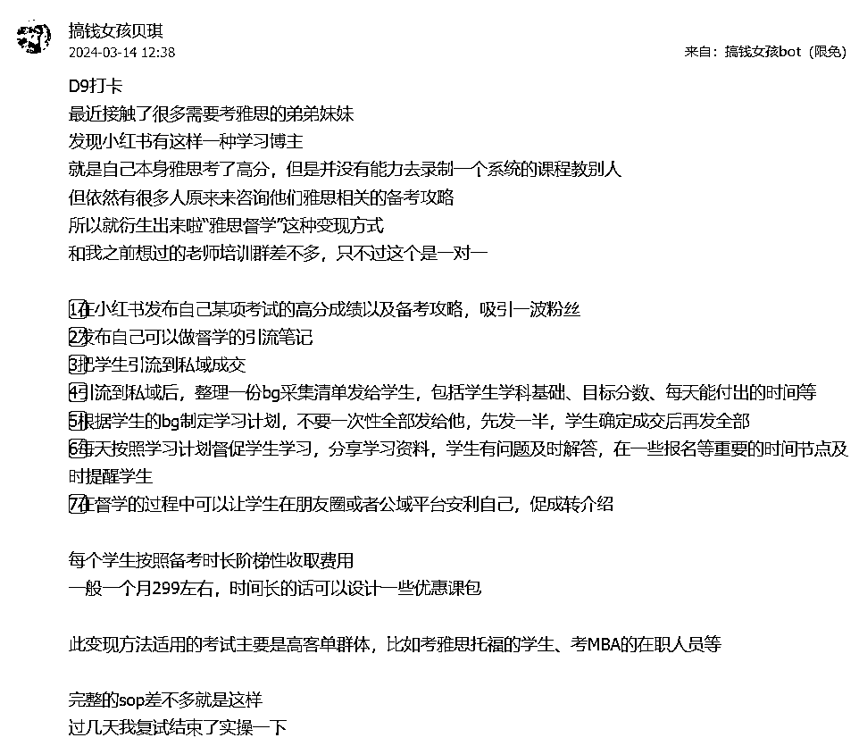
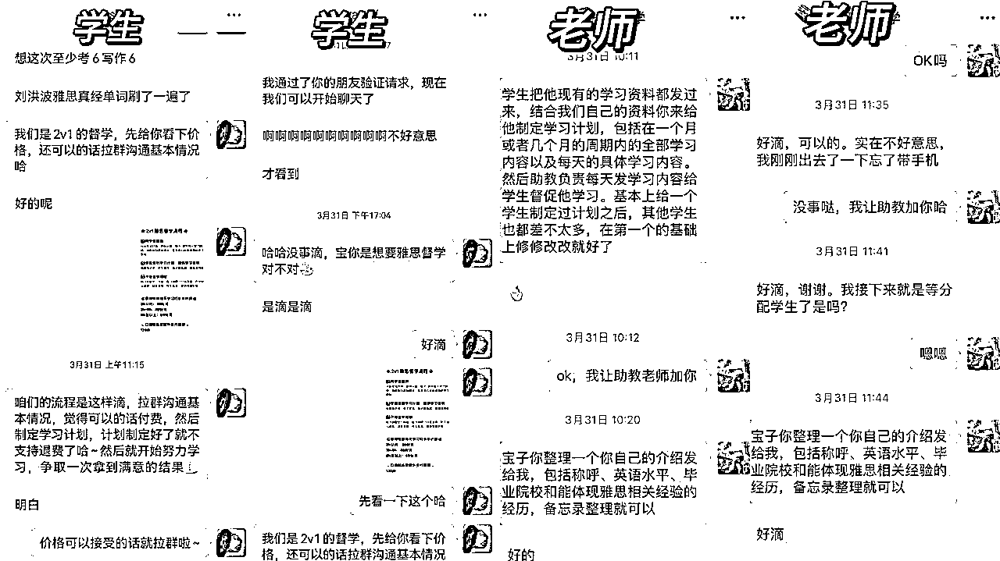
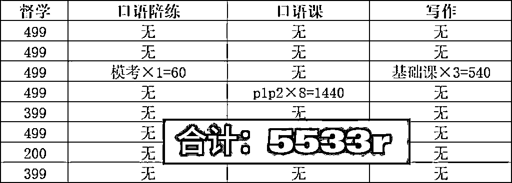

来源：https://naqy4jdp284.feishu.cn/docx/ZstjdINDJopIRaxTLCIcPyd2nVf
大家好我是贝琪，自由职业不到一年，加入生财四个多月，参加过一次今年三月的航海，没有拿到结果，但在航海期间，通过生财思维，让我跑通了自己的第一个mvp——雅思督学项目
今天的分享将从以下四个方面来进行
我从去年12月开始听搞钱女孩，1月加入生财，五个月以来几乎每天都在听和看跟赚钱相关的事情，不停的输入、不停的思考，让我的生财思维在这段时间得到了之前近30年都没有得到的提升
因为我自己参加了24考研，所以二月末在准备查成绩的时候，凭借在风向标挖掘航海手册中学到的发现异常值的思路，发现了考研成绩在小红书的热度，我发布了这样一条风向标，这也算是督学想法的雏形，从这之后就开始有意无意地关注这方面的事情

2月和3月那段时间我刚好在做小红书留学类的兼职，每天会接触到很多准留学生，他们几乎全部都有学习雅思的需求，有一天我看到留学群里有人发了一条关于雅思督学老师的消息，就去查了一下督学是什么意思，这是第一次接触到雅思督学这个概念，但是当时还没有意识这是一个需求
3月14号写了一篇复盘，当时好好把雅思督学的赚钱逻辑捋了一下，刚发完就有群里正在备考雅思的姐妹来找我，说愿意给我付费报名我的督学，但是我拒绝了，因为觉得自己雅思成绩不够好，想以后有机会试试MBA备考督学来着，虽然拒绝了，但这颗种子已经在我心里生根发芽

命运的齿轮在3月30号这天开始转动，这天我参加了一场户外徒步，当我把手机放进包里，假装专心走路的时候，脑子里其实在不停地转，一边走路一边复盘第三期航海自己参加的项目，闲鱼高客单带货和视频号中老年知识付费，虽然在这两个项目上我都还没有拿到结果，但是我总结了一下这两个项目的共同点：就是都用到了中介思维
闲鱼高客单带货是把供应商的产品自己加价挂到闲鱼上出售
视频号中老年知识付费是通过视频号发布视频来引流到微信，然后去成交线上书法课
在复盘这两个项目的过程中，我把中介思维迁移到了我之前研究过的雅思督学项目上：
雅思督学项目我自己当老师不行，但是可以找行的人来做啊！
结合我的小红书运营经验，我可以自己去前端搞流量，然后后端找别人来帮我把项目落地！我来赚中间的差价
于是3月31号立刻开始行动
我用准留学生的账号写过一篇“求靠谱雅思督学”的帖子，这种帖子在小红书会吸引很多雅思老师来自荐，也会吸引同样想要找雅思督学的学生来围观，我用比比先森在小红书运营航海手册里提到的推拉式回复，回复了一些评论，把这篇帖子炒热之后，写了一个置顶评论，内容就是“我已经找到督学了，不要再给我推荐了”，相当于埋了一个钩子，然后就有同学在看到之后，去后台找我求推荐雅思督学，我当时还没有任何产品，所以只能先在小红书后台把他们稳住，假装自己微信号发不出去来拖延时间
❗注意：前方行动密集
有了客户之后，31号一大早我就去boss上聊雅思老师（补充一下，因为兼职的原因之前注册过一个工作室），找到了两个简历还不错的雅思老师
在wps找到了一个每月学习计划的excel模板
在某鱼上花9.9买了一大包电子版的雅思资料
花不到半小时的时间参考小红书其他雅思督学的笔记，用备忘录写了一份督学流程，定了价格
然后就把学生加到了助教的微信（其实就是我自己的小号）上
关于小红书引流，我尝试过很多方法，包括：
❗建议不同方法换着用，不要每次引流都用相同的话术
回到我的督学上来，很神奇的是，没有任何销售技巧的我，引流来的前两个同学，没有问太多的问题，就直接给我付费了，后面我复盘了一下，是因为推荐他们来的那个小红书账号人设做的比较真实，他们愿意相信一个比较真实的同学的推荐
接下来就是两个老师通过我的计划模板和资料来给学生制定学习计划，我（助教）的工作是每天提醒一下同学该学习了该打卡了，提供一些情绪价值，偶尔看到了雅思相关的消息发到群里，起到了一个中介的作用

4月8号在我进行了一周这个项目的时候，生财思维课开放了，我阅读之后发现，这个雅思督学不正是运用了中介思维吗~还有mvp思维、第一块钱思维、异常值思维、对标思维，这些生财思维其实在这个案例里多多少少都有体现
在开始项目之前我虽然没有看过《生财思维课》，但已经在阅读精华帖、风向标、航海手册的过程中形成了一些生财思维，这些思维在我以后的搞钱路上一定会有越来越大的帮助
做了两个星期之后，我算是知道为什么专门做雅思督学的很少了，因为是真的有点难扩大，一个兼职老师能接的学生数量有限，如果想扩大的话，就要很多的兼职老师，找全职老师又涉及到其他乱七八糟的事情，而且哪怕是全职老师，一对一能对接的学生数量有限，客单价低，天花板低
所以当有一个学生有上课需求的时候，我就让老师开了的线上课，学生自己和老师约时间，腾讯会议上课，算是开了一个新的小切口

一点锻炼生财思维小建议
致谢
感谢@搞钱女孩陈雪让我行动起来，才能跑通第一个mvp
感谢@梁靠谱为我的帖子提出宝贵的意见
贝琪微信：szybecky
欢迎链接